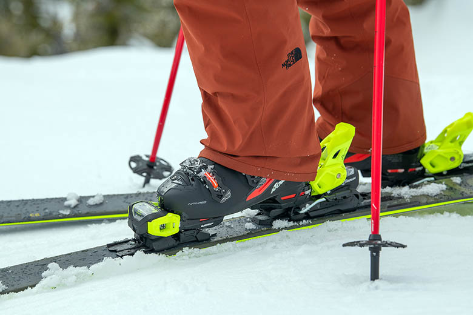
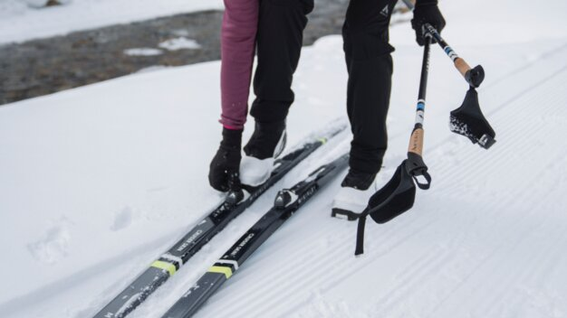
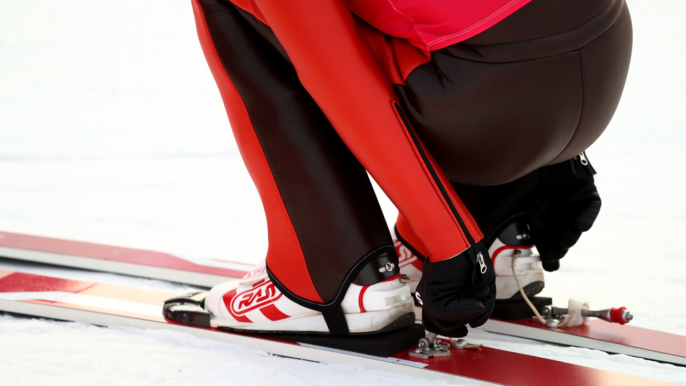

How to start skiing
Step-by-step guidance on how to start skiing for the first time.
-
Prepare all the necessary skiing equipments:
- ski
- ski poles
- ski boots
- helmet
- ski goggles
- gloves
- Take on your ski boots.
- Check that the binding is in the step mode.
- Put your ski boot into the binding.
-
Push the tip of your boot to the front part of the binding and click the heel
to the back part of the binding.

Note:Don't hesitate to use some force. -
Click the tip of your boot to the front part of the binding.

Note:You can use your hand to hold the ski and pre-open the binding. -
Position your boot into the binding and click the lock up your heel by your
hand.

- Put on the ski goggles.
- Put the gloves on.
- Take on the helmet.
- Grab the poles.
- Go to the slope track ski jump and start.